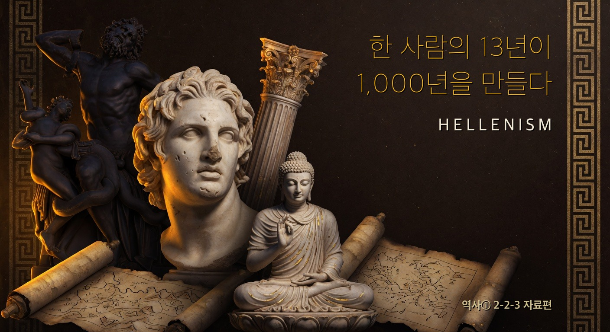
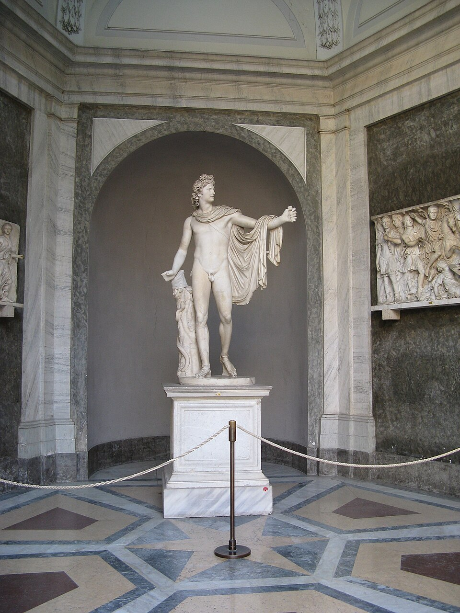
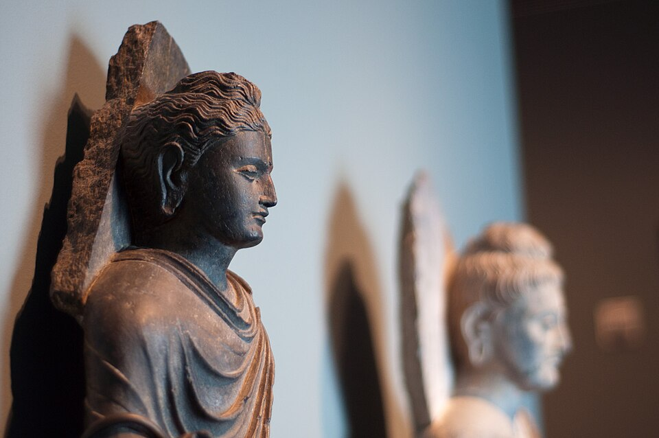
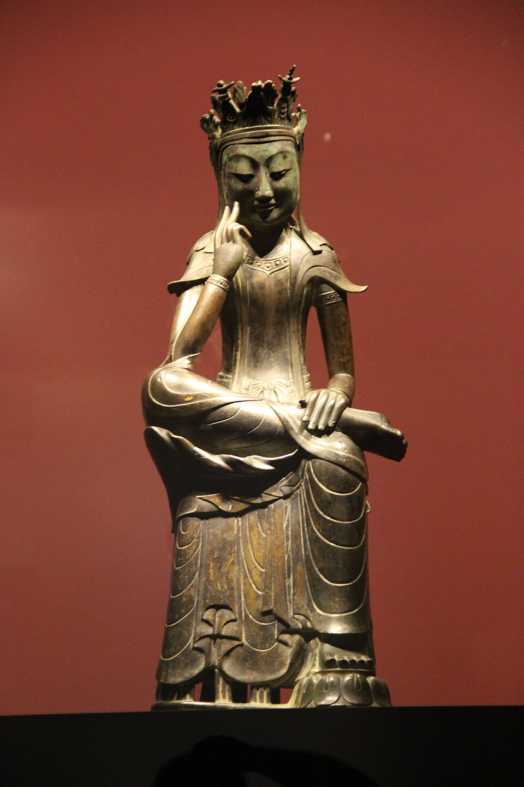
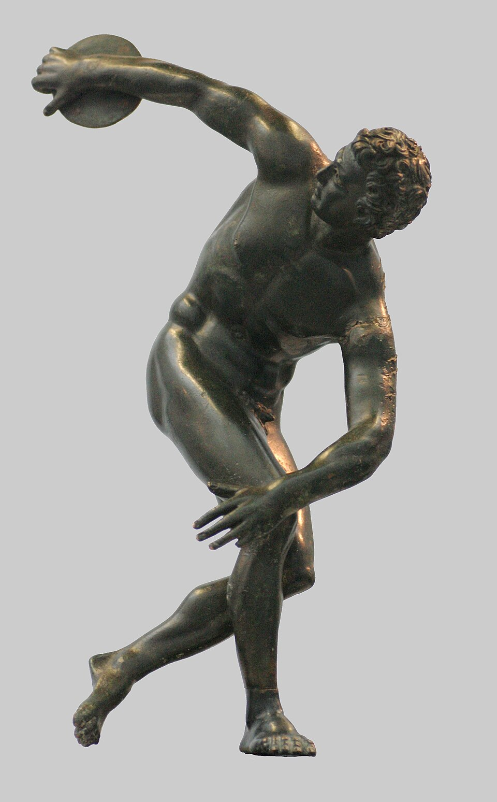
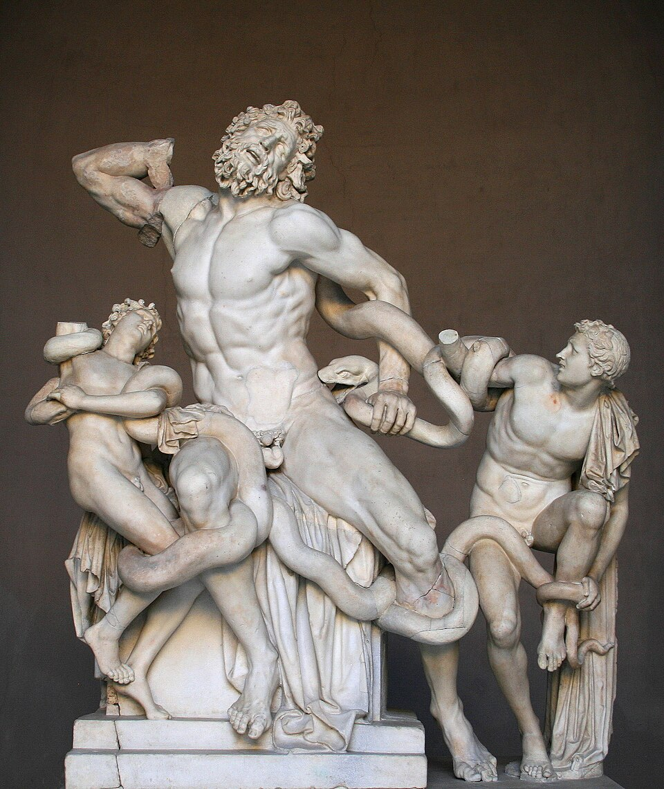

- 알렉산드로스의 정복과 헬레니즘 문화 형성을 인과관계로 설명할 수 있다.
- 폴리스 시대와 헬레니즘 시대의 차이를 비교할 수 있다.
- 우리나라 석굴암이 어떻게 그리스 문화의 후손인지 자신의 관점으로 서술할 수 있다.
- 헬레니즘: Hellas(그리스) + ism(주의) = 그리스 문화가 동방으로 퍼져 만들어진 새 문화
- 폴리스: 시민 수천~수만의 작은 도시 국가. 시민이 직접 정치에 참여
- 세계 시민주의: 내 폴리스가 아니라 세계의 시민이라 여기는 생각 (kosmos세계 + polites시민)
🎙️ 경주 석굴암, 사실 2,300년 전 그리스 조각의 후손이야. 아래 세 얼굴의 옷주름·곱슬머리·콧날이 거의 똑같지? 한 사람의 13년 정복 때문 — 오늘 그 이야기.



🎙️ 폰 셀카 5장 — 보정(완벽·무표정) vs 자연(웃음·찡그림), 어디가 많아? 자연이 많으면 너도 헬레니즘 편(왜인지는 4단계 ⑪).
| 내 셀카 5장은? | □ 고전기(보정) □ 헬레니즘(자연) □ 반반 |
🎙️ 알렉산드로스의 가정교사는 동네 선생님이 아니라 아리스토텔레스(서양 철학 최고봉)였어. 13살부터 세계 최고 지성에게 배운 소년이 20살에 왕이 돼 13년 만에 3개 대륙을 정복한다.
| 시기 | 일어난 일 |
| B.C. 356 | 마케도니아 ① 출생·아리스토텔레스가 가르침 |
| B.C. 336 | 부친 암살·20세 즉위 |
| B.C. 334~ | ② 원정 시작 |
| B.C. 326 | 인도 ③ 강 도달 → 군대 항명으로 회군 |
| B.C. 323 | 바빌론에서 열병으로 사망·33세 |
(교과서: "알렉산드로스는 페르시아를 정복하고 인도 서북부까지 진출하여 거대한 제국을 건설하였다." 비상교육 역사①(이병인) p.47)
⚠️ 반전 — 왕도 군대 마음은 못 이긴다: 더 정복하려 했지만 10년 원정에 지친 군대가 집단 항명 → 회군. 인도 본토는 못 가졌고, 그 자리에 훗날 마우리아 왕조가 선다.
- 70개 ④ 도시 건설 (이집트 알렉산드리아 = 100m 등대·수십만 권 도서관의 학문 중심지)
- 그리스인 + 동방인 결혼·이주 (알렉산드로스 본인도 페르시아 공주와 결혼)
- 그리스어(코이네)를 공용어로
🎙️ 디오게네스는 통(항아리) 속에 살던 거지 철학자. 가진 게 없어도 제일 자유로웠대. 세계를 다 가지려는 알렉산드로스와 정반대지.
| 인물 | 어떤 사람? |
| ⑤ (다 가진 자) | 세계 정복이 목표·13년에 3 대륙 |
| ⑥ (다 버린 자) | 욕망을 다 버린 자유·"햇빛 가리지 마라(비키라)" |
💡 왜 헬레니즘엔 이 둘이 동시에 인기였을까? 폴리스가 무너져 나라를 위한 삶이 흔들리자, 사람들은 세계를 품는 삶(알렉산드로스)과 내 마음만 챙기는 삶(디오게네스) — 밖으로 넓히거나, 안으로 줄이거나 두 갈래로 갔다. (→ 4단계 ⑫세계시민주의·⑩개인주의)
헬레니즘은 ⑦ 문화와 ⑧ 문화가 만나 만들어진 새 문화다 (B.C. 4~1세기, 약 300년).
(교과서: "그리스 문화가 동방으로 전파되어 헬레니즘 문화가 형성되었다." / "폴리스 중심의 공동체 의식이 줄어들고 개인의 행복을 추구하는 개인주의가 등장하였다." 비상교육 역사①(이병인) p.47)
🔑 왜 생각이 바뀌었나 — 열쇠는 폴리스의 붕괴
- 예전 아테네: 작은 공동체 → 내가 직접 투표·재판·참전. 내 한 표가 나라를 바꿨다.
- 알렉산드로스 이후: 폴리스가 거대 제국에 흡수 → 정치는 먼 왕·총독이 결정. 내 한 표는 사라지고, 시민은 구경꾼이 됐다.
★ 이 한 가지 변화(폴리스 붕괴)에서 아래 4가지가 갈라져 나온다 — 외울 단어가 아니라 한 사건의 네 결과.
| 특징 | 왜 그렇게 됐나 | 예 |
| ⑨ | 그리스+동방 섞임을 당연시 — 알렉산드로스부터 동방인과 결혼·등용 | 코이네·간다라 부처 |
| ⑩ | 내 한 표가 없어지자 시선을 안으로 → 내 마음·행복에서 의미 | 에피쿠로스·스토아 |
| ⑪ 예술 | 완벽한 신(이상화) X → 고통·감정을 사실대로. 관심이 신→현실 인간으로 | 「라오콘」의 비명 |
| ⑫ | "나는 아테네인" 대신 "나는 세계의 시민" — 울타리가 넓어짐 | 디오게네스·알렉산드리아 |
💡 한 줄: 폴리스가 무너지자 → 시선은 안으로(⑩)·울타리는 밖으로(⑫)·예술은 이상에서 현실로(⑪)·사회는 섞임으로(⑨).


💡 활동 0 회수 — 네 셀카가 자연 표정 多면 ⑪ 자연주의 직계. 완벽함(보정)보다 진짜 나(자연)에 끌리는 게 헬레니즘이라서.
알렉산드로스가 정복한 인도 서북부 간다라에는 그리스 조각가의 후예들이 남았다. 그런데 원래 불교는 부처를 사람 모습으로 만들지 않았다 — 발자국·보리수·법륜 같은 상징으로만 표현했다.
약 400년 뒤, 이곳에서 처음으로 부처를 사람 모습으로 조각하게 됐는데, 바로 곁에 있던 그리스 조각 기법(곱슬머리·물결치는 옷주름·균형 잡힌 몸)을 빌려 썼다. 그래서 그리스 신처럼 생긴 부처 — 간다라 양식이 탄생했다.
🎙️ 정리하면 — 서양의 조각 솜씨 + 동양의 불교 신앙 = 세상에 없던 새것(인간 부처상). 헬레니즘 '융합'이 만든 가장 멋진 작품이야.
간다라 부처 (AD 1~2세기·쿠샨 왕조) → 중국 둔황 막고굴 → 한국 ⑬·반가사유상 (통일신라 8세기) → 일본
- 비단길을 타고 부처상이 동쪽으로 1,000년에 걸쳐 전해졌다.
- 네가 경주에서 보는 ⑬번도 간다라 → 중국 → 신라로 이어진 헬레니즘의 후손 — 1단계에서 세 얼굴이 닮았던 이유가 바로 이것이다.
💡 ★ 한 사람의 13년 정복이 2,300년 뒤 한국 국보까지 이어졌다 — 융합은 사라지지 않고 계속 새것을 낳는다.
펠로폰네소스 전쟁으로 폴리스 쇠퇴 → 마케도니아 대두 (⑭가 알렉산드로스 교육) → 알렉산드로스 13년 정복(3 대륙) → 70 알렉산드리아·이주·결혼 정책 → 폴리스 붕괴 → 헬레니즘 (개방성·개인주의·자연주의·세계 시민주의) → 간다라 부처 → 중국 → 한국 석굴암 → 일본
💡 오늘의 한 줄: 13년이 1,000년을 만들었다. 짧은 행동·긴 결과 — 융합이 새 것을 낳는다.
정답이 정해진 문제가 아니야. 네 경험과 판단을 솔직하게.
활동 1. 너는 누구에 가까워? — 알렉산드로스(다 가짐·정복) · 디오게네스(다 버림·자유) · 간다라 조각가(섞어서 새것). 지금의 너와 가장 닮은 사람을 고르고, 왜 그런지 너의 경험과 함께 써 보자.
활동 2. 내 일상 속 헬레니즘. 어제 하루 중 헬레니즘의 흔적(① 개방성=섞임 · ② 개인주의=내 행복 · ③ 자연주의=자연스러움 · ④ 세계시민주의=세계 연결) 하나를 찾아, 무엇이고 4특징 중 무엇과 연결되는지 써 보자. (예: K-팝의 전 세계 팬덤 = 세계시민주의)
활동 3. 다시 보는 한국 문화. 우리 국보 석굴암이 그리스 조각의 후손이라는 사실은, '한국 문화'를 어떻게 다시 생각하게 할까? 네 생각을 써 보자.
다음 시간: 로마가 제국으로 성장하다 — 헬레니즘을 이어받은 법과 실용의 제국 (2-2-4)